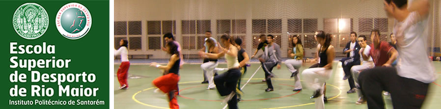

| Gabinetes de Apoio > Gabinete da Avaliação da Qualidade |

Gabinete da Avaliação da Qualidade
Coordenação: Professor Adjunto Félix Romero
Grupo de trabalho: Professores Rita Santos Rocha, Pedro Sequeira, Carlos Silva; Alexandre Santos, Elsa Vieira, Teresa Bento e Dr.ª. Marta Ribeiro.
Competências do GAQ:
Cumprir o disposto na Lei da AVALIAÇÃO DA QUALIDADE DO ENSINO SUPERIOR de 22 de Março de 2007, cujo objecto da avaliação (artigo 3.º) se centra em:
- A avaliação tem por objecto a qualidade do desempenho dos estabelecimentos de ensino superior, medindo o grau de cumprimento da sua missão através de parâmetros de desempenho relacionados com a respectiva actuação e com os resultados dela decorrentes;
- A avaliação tem em especial consideração, na definição e aplicação dos parâmetros de desempenho, a diferença de objectivos entre o ensino universitário e o ensino politécnico;
- A avaliação tem por referencial as boas práticas internacionais na matéria;
São apontados como parâmetros de Avaliação da Qualidade do Ensino Superior (artigo 4.º), os seguintes:
- São, designadamente, parâmetros de avaliação da qualidade relacionados com a actuação dos estabelecimentos de ensino superior:
- O ensino ministrado, designadamente o seu nível científico, as suas metodologias de ensino e aprendizagem e os processos de avaliação dos estudantes;
- A qualificação do corpo docente e a sua adequação à missão da instituição;
- A estratégia adoptada para garantir a qualidade do ensino e a forma como a mesma é concretizada;
- A actividade científica e tecnológica devidamente avaliada e reconhecida, a um nível adequado à missão da instituição;
- A cooperação internacional;
- A colaboração interdisciplinar, interdepartamental e interinstitucional;
- A eficiência de organização e de gestão;
- As instalações e o equipamento pedagógico e científico;
- Os mecanismos de acção social.
São, designadamente, parâmetros de avaliação da qualidade relacionados com os resultados decorrentes da actuação dos estabelecimentos de ensino superior:
- A adequação do ensino ministrado em cada ciclo de estudos às competências cuja aquisição aqueles devem assegurar;
- A realização de ciclos de estudos em conjunto com outras instituições, nacionais ou estrangeiras;
- A procura por parte dos estudantes;
- A abertura a novos públicos e a capacidade de promover a sua integração com sucesso;
- O sucesso escolar;
- A inserção dos diplomados no mercado de trabalho;
- A produção científica e tecnológica a um nível adequado à missão da instituição;
- O contacto dos estudantes com actividades de investigação desde os primeiros anos;
- A valorização económica das actividades de investigação e de desenvolvimento tecnológico a um nível adequado à missão da instituição;
- A integração em projectos e parcerias internacionais;
- A prestação de serviços à comunidade;
- O contributo para o desenvolvimento regional e nacional a um nível adequado à missão da instituição;
- A acção cultural e, designadamente, o contributo para a promoção da cultura científica;
- A captação de receitas próprias através da actividade desenvolvida;
- A informação sobre a instituição e sobre o ensino nela ministrado.
São objectivos da avaliação da qualidade (artigo 5.º):
- A melhoria da qualidade das instituições de ensino superior;
- A informação fundamentada da sociedade sobre o desempenho das instituições de ensino superior;
- O desenvolvimento de uma cultura institucional interna de garantia de qualidade.
Contactos |Como Chegar |Informações Turísticas|Mapa do site|Links uteis|Sugestões|Área Interna|Escola Superior de Desporto de Rio Maior©2008